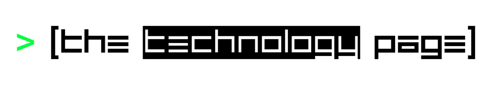
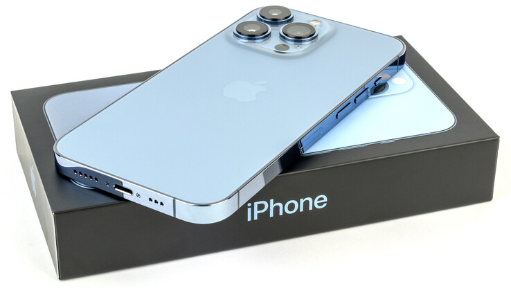

The Technology Page
About
What is
"The Technology Page?"
The Technology Page is a page within The Digital Domain where you can find all the news and insights about hardware advancements, device reviews, updates, and the likes of it. Featured news regarding technology can also be seen here. I hope you will enjoy your stay here at The Technology Page.
Chip Shortage Update [FEATURED]
Sony and TSMC attempt to
Address chip shortages with a factory in Japan

The rumors of a Sony-TSMC chipmaking partnership were true. Nikkei reports Sony and TSMC are teaming up to build a semiconductor factory in Kumamoto, Japan that would tackle "strong global market demand" for specialized chips. That is, it would address chip shortages that have plagued everyone from car makers through to phone brands. The deal has TSMC creating a local subsidiary, Japan Advanced Semiconductor Manufacturing, where Sony will have a minority stake of roughly $500 million. Read more
Phone Review
Apple iPhone 13 Pro Review
Bombastic smartphone with minor weaknesses
The Apple iPhone 13 Pro and the iPhone 12 Pro share a lot of similarities. However, upon lifting the
iPhone 13 Pro the additional heft and the increased size of the camera lenses are immediately noticeable.
The iPhone 13 Pro comes with the Apple A15 Bionic, a bigger battery and a brighter OLED display with adaptive
refresh rate functionality. Moreover, the iPhone 13 Pro supports refresh rates of up to 120 Hz. The 128 GB
entry-level model still costs 1149 Euros (~$1332). The 1 TB top-end model has an MSRP of 1729 Euros (~$2005).
Read more
Featured News:
Gaming

'Forza Horizon 5' Review
Reviews of Forza Horizon games often veer into reminiscing about old memories of playing racing games. The reason for this is simple: “Forza Horizon 5” offers almost everything in the history of the genre, and does it better. Read more
Technology
Sony and TSMC attempt to address chip shortages with a factory in Japan
The rumors of a Sony-TSMC chipmaking partnership were true. Nikkei reports Sony and TSMC are teaming up to build a semiconductor factory in Kumamoto, Japan that would tackle "strong global market demand" for specialized chips. Read more